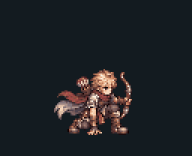
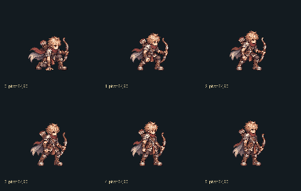
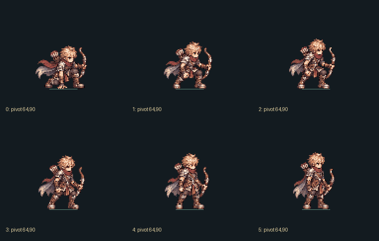
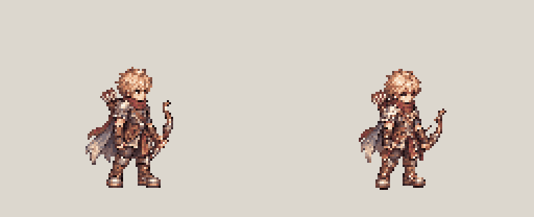

기존 주인공 모습의 착지·압축·반기립·준비·회복·대기 6프레임 검토안입니다. 게임에는 아직 연결하지 않았습니다. 60ms 간격은 비교용 제안이며 이동·무적·사격 시간을 바꾸지 않습니다.




완전한 모션 일치 판정이 아닙니다. 자세 사이의 팔·활·몸통 체적 변화와 마지막 대기 전환은 실제 게임에서 추가 검토해야 합니다. 범위·연결 계획 · 생성 원본 · 정적 검사